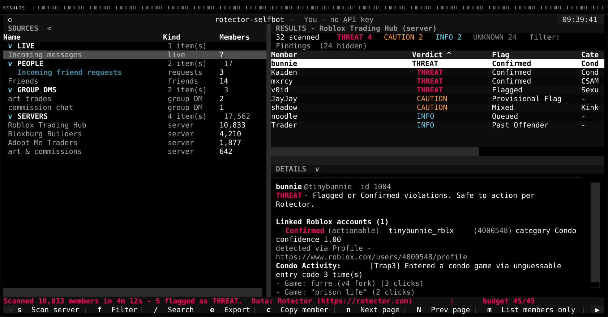
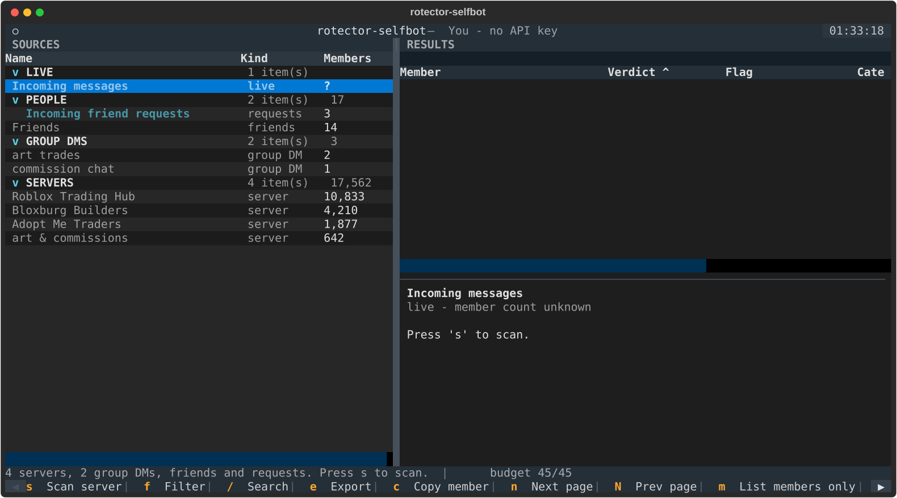
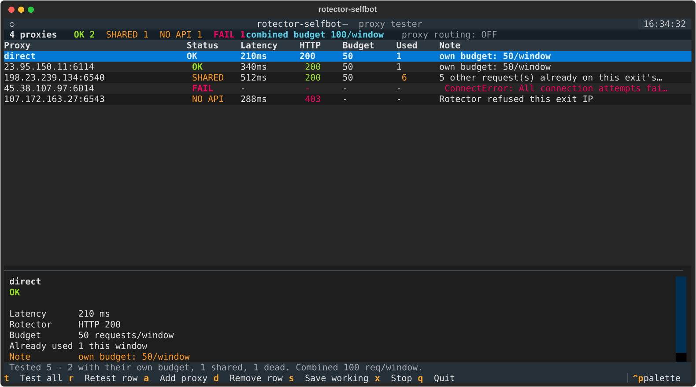

A server of ten thousand has a handful that matter.
Findings only, by default. Every member is checked; the table lists the ones a human needs to look at, with the flag type, the category, the linked Roblox accounts and the full reasons underneath.
Servers are not the only thing you can point it at. Friends, incoming friend requests and group DMs all scan the same way, and those arrive complete in a single request: no sidebar, no coverage question.

The number that says who you missed.
A member the sidebar never shows is a member never checked. Discord only hands a user account the full member list when it holds kick, ban or manage roles in that server. Without those, offline members of a large server are unreachable. Not slow. Unreachable.
So the scan pursues them through several independent routes: a privileged full-member request, member-list windows unioned across every channel@everyone can see, an adaptive name search that deepens only where results come back saturated, and the public widget as a name source.
Whatever is still missing is reported as a fraction with the reason. Not a checkmark, not a spinner that stops. A scan that reached 94% says 94%.

A bot token removes the limit entirely. With the Server Members Intent it is handed every member of the servers it was invited to, offline included, whatever permissions it holds. It cannot see friends or DMs, so that trade is yours to make. The tool takes whichever token you give it.
Read this before you install it.
Automating a user account is against Discord's Terms of Service, whatever the account is used for. Discord does not carve out an exception for safety tooling, and accounts caught driving the API this way get disabled.
This tool only ever reads. It lists servers, reads the member sidebar, and looks ids up. That is still automation of a user account, and the risk of losing the account is real and entirely yours.
If you have the option, a regular bot with the GUILD_MEMBERS
intent does the same job with no ToS problem. The Rotector half of the
codebase works unchanged either way.
A verdict is not a background check. NO DETECTIONS means
Rotector has not flagged the account yet. It is not a clean bill of
health, and Rotector's own terms forbid presenting it as "safe".
Only THREAT, meaning flag types Flagged and Confirmed,
is documented as safe to act on automatically. Everything below that is
information for a person to weigh, and the tool treats it that way.
Five tiers, and what each one permits.
The strength of the evidence decides how hard the tool makes it to act. Nothing here is a conclusion the database did not reach.
| Verdict | Flag types | Evidence | What it permits |
|---|---|---|---|
| THREAT | Flagged, Confirmed | Detected violations | Acts on one confirmation. The only tier Rotector documents as safe to action. |
| CAUTION | Provisional, Mixed | Signal, not proof | Permitted, but takes a second confirmation: tick the acknowledgement and type the action word. |
| INFO | Queued, Past Offender, Redacted | Informational | Blocked unless deliberately overridden. Not an accusation. |
| NO DETECTIONS | Unflagged | Nothing detected yet | Blocked. Never shown as "safe": acting on it is acting on nothing. |
| UNKNOWN | — | No linked account | Blocked. Rotector knows of no Roblox account for this user. |
Acting on a finding, one or fifty.
What the keys mean depends on where you are: kick and ban in a server, remove friend and block on your friends list, decline on a request, remove from group in a group DM.
Bulk runs are the least recoverable thing here, so they are the hardest to start. Ineligible members are named and excluded rather than swept along; you type the exact target count by hand; the run is paced rather than parallel and stops on a keypress; and whatever Discord refuses is reported per member instead of stranding the rest.
Every reason written to the audit log carries attribution and an appeal route, because Rotector's terms require that anyone actioned on their data can contest it. With a bot token the person can also be told before the action, while a DM can still reach them.
- sScan the selected source
- fCycle the filter
- /Search by name or id
- eExport — CSV, TXT, PNG, HTML
- kKick / remove friend
- bBan / block
- ␣Tick for a bulk action
- BRun one action against many
- xStop a scan or a bulk run
- ^pCommand palette
Every command is reachable twice, by key and by searchable palette, so a clipped footer never hides functionality.
Get it running.
-
Install
Python 3.11 or newer, because it reads its config with
tomllib. Nothing is installed globally.python3 -m venv .venv ./.venv/bin/pip install -r requirements.txt -
Configure
Copy the example and put a token in it, or set
DISCORD_TOKEN/DISCORD_BOT_TOKENin the environment.config.tomlis gitignored; the token is a full-access credential, so treat it like a password.cp config.example.toml config.tomlA Rotector API key is optional. Without one you get the standard rate limit, which is enough for normal use. Set both a user and a bot token and the user token wins, because it can reach strictly more.
-
Run
./.venv/bin/python -m rsb# the scanner ./.venv/bin/python -m rsb proxies# the proxy testerFirst run opens a setup wizard; after that, every setting is editable in-app with
ctrl+s. Upgrading from an older version,python -m rsb migrateappends whatever settings are new and leaves your values and comments alone.
Inside the window, not around it.
Rotector allows 50 requests per 10 seconds per IP. The scanner holds a reserve, tracks the returned headers, and waits rather than gambling. Measured across live runs at zero rate-limit rejections.
Proxies are supported for the throughput they genuinely add, and the tester checks each against the real API to show which actually bring their own budget and which only look like they do. Rotating IPs to defeat the limit is not what they are for; their terms forbid it, and so does this tool.
